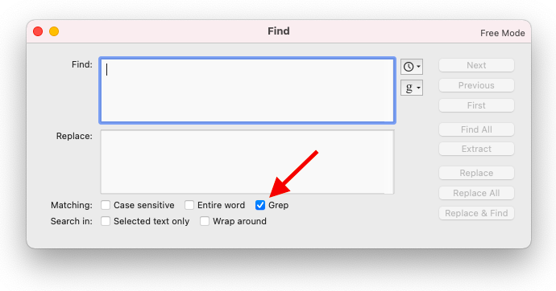

Lesson 2: Manipulating Text with Grep and Sed¶
© David Gold. Except where the source is noted, this work is licensed under a Creative Commons Attribution License CC-BY 4.0.
2.0. Introduction¶
The goal of this module is to get you comfortable manipulating text documents with command line tools. Some of the text files we work with are huge (multiple gigabytes in size!) and contain millions of lines. You don’t want to edit these kinds of files by hand, and sometimes they are too large to open in a text editor. The tips and tricks below will get you working with text files in no time.
2.1 Introducing grep and egrep¶
grep (an acronym for “Global Regular Expression Print”) is installed by default on Linux and Mac systems. Grep is extremely useful to search for patterns (a particular set of characters or words) in a file or group of files.
egrep (“Extended Global Regular Expression Print”) is a very similar program that has some additional capabilities, including the ability to use more complex regular expressions (a subject we will discuss later in this module). I will use egrep in this module, though grep would also work in most cases.
To start testing out egrep, let’s create a new text file:
cd ~
nano GREP_Test.txt
This will open up the Nano text-editor described in Lesson 1. Copy and paste the following text into Nano:
Some dogs are brown
Some cats are grey
All grey cats are mammals
Parrots can be many colors
Remember, you need to use the command + x keys to exit Nano. Nano will then ask the following:
Save modified buffer (ANSWERING "No" WILL DESTROY CHANGES) ?
Press the y key to save your file. Nano will then double-check what you want to name the file; hit the enter / return key to save the file.
You can make sure the file saved correctly by using the head command
head GREP_Test.txt
If everything worked your Terminal screen will return the text you pasted in.
2.1.1. Extracting patterns with grep¶
You can use grep to extract lines that contain a pattern:
egrep "cat" GREP_Test.txt
Note that egrep is case sensitive, so if you use the following command you will not find any matching lines:
egrep "CAT" GREP_Test.txt
You can make egrep case insensitive by using the -i flag:
egrep -i "CAT" GREP_Test.txt
You can also use the invert flag -v to report lines that do not contain a pattern:
egrep -v "cat" GREP_Test.txt
The -o flag reports only the pattern you searched for (assuming it exists in the input file):
egrep -o "cat" GREP_Test.txt
Do you want to know how many lines have the word “cat”? You can figure that out using the count flag -c
egrep -c "cat" GREP_Test.txt
You can export your results to a new text document by using the greater-than (>) symbol:
egrep "cat" GREP_Test.txt > GREP_Test_cats_only.txt
You can use the ls command to see the files in your folder (you can also use open . to view the folder in Mac Finder). You should see a text file caled “GREP_Test_cats_only.txt”.
2.1.2. Doing more complicated grep searches with regular expressions¶
A regular expression, often shortened to “regex” or “regexp”, is a way of specifying a pattern in text to find all occurrences that match the pattern. Here are some regular expressions I use a lot:
character |
description |
|---|---|
^ |
start of line |
$ |
end of line |
. |
wildcard (matches any character) |
* |
zero or more characters |
+ |
one or more characters |
[ ] |
matches a single character contained in brackets |
\s |
matches any whitespace character (space, tab) |
\S |
matches any non-whitespace character |
\t |
matches any tab character |
\d |
digit (numbers) |
\D |
not digit (numbers) |
\w |
word (letters or numers) |
\W |
not word (letters or numers) |
Let’s say I wanted to find lines that end with the word “grey”. I can use the “end of line” charcter to anchor my search:
egrep "grey$" GREP_Test.txt
Or if I wanted to extract every word that starts with the letter “c”, I could ask egrep to look for the letter “c” followed by one or more non-whitespace characters (\S+) :
egrep -o "c\S+" GREP_Test.txt
There are several other ways I could have written the command that would have produced the same ouput. Can you come up with one?
2.2 Introducing sed and gsed¶
sed (short for stream editor) is a Unix utility that parses and transforms text. Like grep / egrep, there is a version of sed called gsed (GNU stream editor) which contains an expanded regular expression library. For that reason, I usually use gsed instead of sed.
You can check to see if you have gsed installed on your computer by invoking the -h flag. If it works, you will see the help menu for gsed.
gsed -h
Tip
Most command-line programs have a help menu that can be accessed by adding the -h flag after the program name. It’s usually a good way to learn about a program’s syntax and capabilities (although some help menus are better than others).
2.2.1. Find and replace text with gsed¶
gsed has a lot of capabilities, but I mainly use it for simple find and replace functions on large text files. Here is the structure of a gsed-based find and replace:
Let’s say I wanted to replace all the spaces in “GREP_Test.txt” with underscores (_). That might seem odd, but it’s actually something I do all the time…I’ll explain it later. You can do that with the following gsed command:
gsed 's/ /_/g' GREP_Test.txt
The replaced text will appear on your Terminal screen. If you want to save the edited text you can export it to a new file with the “greater than” sign (>)
gsed 's/ /_/g' GREP_Test.txt > GREP_Test_underscored.txt
Check that this code worked by using the head command:
head GREP_Test_underscored.txt
If you want to perform a find and replace in the original file, you can use the -i(“in text”) flag:
gsed -i 's/ /_/g' GREP_Test.txt
Cleanup¶
We’re done with the grep and sed exercises, so let’s remove the test files we made:
rm -i GREP_Test*
Did you notice how I used the asterisk (*) to reference multiple files? Check the regular expression chart again if you don’t understand why that worked.
2.3 Find and replace text in BBEdit¶
I find egrep and gsed useful for simple changes and for giant files. But I find these regular expressions most useful when working in BBEdit.
Execute the following command in Terminal to create a new file called Example_Fasta.fasta:
echo -e '>AIW82450.1 Pou4, partial [Xipholeptos notoides]\nSDVGAALANLKLPGVGSLSQSTVCRFESLTLSHNNMIALKPVLQAWLEEAEKQAREKKIEGEAGVMPIHG\nEKKRKRTSIAAPEKRSLEAYFAVQPRPSGEKIAQIAEKLDLKKNVVRVWFCNQRQKQKRMKFSATATH\n\n>AIC75325.1 POU-like homeodomain-containing protein, partial [Kelletia kelletii]\nVTQADVGSALANLKIPGVGCLSQSTICRFESLTLSHNNMIALKPILMAWLEDAERQARERKADAGAEEKK\nRKRTSIAAPEKRSLEAYFAVQPRPSGEKIAQIAEKLDLKKN' > Example_Fasta.txt
Open your current directory in Mac Finder so that you can access “Example_Fasta.txt” and open it in BBEdit:
open .
This is called a fasta file, which is a standardized format for storing genetic data. We will talk more about fasta files in later modules, so I won’t spend much time on them here. But this is the basic structure of a fasta file:
>Sequence 1 The DNA or protein sequence
> Sequence 2 The DNA or protein sequence
…
When you look at “Example_Fasta.txt” you will see two sequences that I got from the National Center for Biotechnology Information (NCBI) (we will talk about this database in more detail later). The IDs of the two sequences are the following:
AIW82450.1 Pou4, partial [Xipholeptos notoides]
AIC75325.1 POU-like homeodomain-containing protein, partial [Kelletia kelletii]
This is a standard NCBI sequence ID (also called a header). It has a basic structure:
The first part of each ID (e.g. “AIW82450.1”) is the sequence identifier. If I put that identifier in the NCBI search bar it would take me straight to the sequence.
The next part of the ID (e.g. “Pou4, partial”) is a description of the sequence. This is generated by the scientist who submitted the sequence to NCBI, and may or may not be useful.
The words in the brackets (
[]) is the scientific name of the species each sequence comes from. Do you know what Xipholeptos notoides and Kelletia kelletii are? If not take a minute to Google them and find out!
For a lot of the downstream work we do, I prefer a simple format where I start with the species name and then the sequence identifier, separating the two with a pipe (|) symbol. I also don’t want any whitespace characters, since those can cause problems in programs we’ll use later. In this case, I want the following ID:
AIW82450.1 Pou4, partial [Xipholeptos notoides]
To be replaced with:
Xipholeptos_notoides|AIW82450.1
I could change the IDs by hand, but that becomes untenable if you’re dealing with hundreds or thousands of sequences. But it is very easy to do with BBEdit and grep.
You can Find patterns in BEEdit by going to Search > Find in the navigation menu at the top of BBEdit, or by hitting the command + F keys. A find and replace window will pop up that looks like this:

The arrow points to a little box called “Grep”. If you check the box you can use grep and regular expressions in your search.
Place the following text into the “Find” box:
(^>)(\S+)(.*)(\[)(.*)(\])
You’ll notice that if the “Grep” box is checked the text you pasted in changes into a bunch of colors, making it easy to identify the syntax of the pattern. If the box is unchecked then BBEdit will look for the literal pattern (spoiler: you’re not going to find it in this document).
What does this pattern mean? We have used parentheses (()) to break our query into six parts (the value of that will become clear in a minute). Let’s break down the meaning of each part:
Pattern |
Meaning |
|---|---|
^> |
Lines that start ( |
\S+ |
… then include one or more non-whitespace characters … |
.* |
… then include any number of characters until you reach … |
[ |
… a bracket ( |
.* |
… then we look for any number of characters after the bracket until we reach… |
] |
… the end bracket ( |
If you hit the Next and Previous buttons on the search window, you will see that it is highlighting the sequence IDs and nothing else.
We can now use another pattern for our replace function. Because we broke our search into pieces with six pairs of parentheses, we can call different parts for our replace function.
Place the following text into the “Replace” box:
\1\5|\2
Here is the meaning of the replace:
Pattern |
Meaning |
|---|---|
\1 |
Return the first thing in parentheses; in this case the “>” symbol. |
\5 |
Return the fifth thing in parenthesis; in this case the species name. |
| |
Add a pipe symbol. |
\2 |
Return the second thing in parentheses; in this case the sequence identifier. |
Hit the Replace All button in your search window and voilà, you have changed the IDs of every sequence!
You will need to do one more “find and replace” to replace white spaces with underscores, but I think you can figure it out (if not, you can always use the gsed command I taught you earlier!)
Cleanup¶
Feel free to close the text file we created. To clean up we can remove it from your computer by going back to terminal and typing the following:
rm -i Example_Fasta.txt